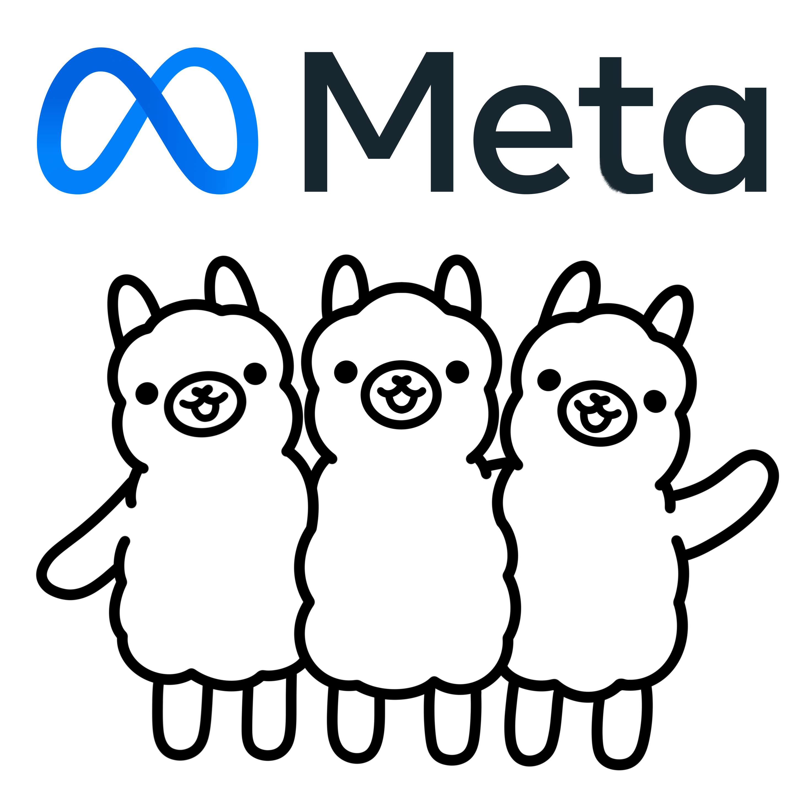
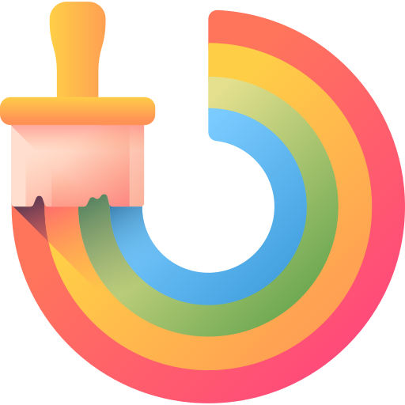
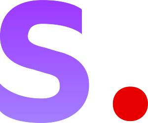

Familia de modelos de lenguaje desarrollada por Meta que puede utilizarse para tareas como
conversación, generación de textos, resúmenes y respuesta a preguntas. Determinadas
versiones pueden descargarse y ejecutarse localmente mediante herramientas compatibles,
dependiendo de sus requisitos y licencias.
Conoce mas de este modelo haciendo click aqui.
Familia de modelos de inteligencia artificial desarrollada por Alibaba que incluye
variantes para conversación, razonamiento, programación y otras tareas. Según el modelo
seleccionado, puede ejecutarse localmente para generar textos, analizar información y
responder instrucciones sin depender necesariamente de una API en la nube.
Conoce mas de este modelo haciendo click aqui.
Familia de modelos de lenguaje desarrollada por Mistral AI, con diferentes tamaños y
capacidades. Sus modelos pueden utilizarse para conversar, resumir documentos, generar
contenido y realizar tareas de razonamiento. Algunas versiones pueden ejecutarse localmente,
de acuerdo con sus requisitos y condiciones de uso.
Conoce mas de este modelo haciendo click aqui.
Familia de modelos de inteligencia artificial desarrollada por Google que permite realizar
tareas de generación de texto, conversación, resumen y procesamiento del lenguaje. Sus
distintas variantes están diseñadas para diferentes necesidades de rendimiento y recursos, y
algunas pueden ejecutarse en computadoras personales compatibles.
Conoce mas de este modelo haciendo click aqui.

Modelo de generación de imágenes desarrollado por Stability AI que transforma descripciones
escritas en contenido visual. Permite crear ilustraciones, paisajes, retratos y
composiciones artísticas. Puede ejecutarse localmente mediante interfaces compatibles y
admite diferentes flujos de personalización y edición.
Conoce mas de este modelo haciendo click aqui.
Familia de modelos de generación de imágenes desarrollada por Black Forest Labs. Permite
crear imágenes a partir de instrucciones de texto, con atención a los detalles visuales, la
composición y la interpretación de las indicaciones. Las posibilidades de ejecución local y
uso comercial dependen de la variante y su licencia.
Conoce mas de este modelo haciendo click aqui.

Familia de modelos generativos de Stability AI diseñada para crear imágenes a partir de
descripciones textuales. Ofrece variantes con diferentes características de calidad y
rendimiento, y permite desarrollar flujos de trabajo locales para producir ilustraciones,
imágenes realistas y diseños creativos.
Conoce mas de este modelo haciendo click aqui.
Familia de modelos de generación audiovisual desarrollada por Alibaba que permite crear
videos a partir de texto o imágenes, según la variante. Está orientada a producir secuencias
animadas y contenido visual generado mediante inteligencia artificial. La ejecución local
requiere software compatible y recursos de hardware adecuados.
Conoce mas de este modelo haciendo click aqui.
Familia de modelos de Qwen especializada en programación. Está diseñada para generar
código, completar funciones, explicar instrucciones y ayudar a resolver errores en
diferentes lenguajes. Algunas variantes pueden ejecutarse localmente y utilizarse en
asistentes de programación o editores compatibles.
Conoce mas de este modelo haciendo click aqui.
Familia de modelos de inteligencia artificial orientada a tareas de programación. Puede
ayudar a generar código, completar fragmentos, explicar algoritmos y analizar problemas de
desarrollo. Sus distintas versiones presentan diferentes requisitos y capacidades, por lo
que conviene elegir una variante compatible con el equipo disponible.
Conoce mas de este modelo haciendo click aqui.
Familia de modelos de lenguaje desarrollada por BigCode y orientada a la generación y
comprensión de código fuente. Puede utilizarse para completar fragmentos de código, asistir
en tareas de programación y trabajar con distintos lenguajes. Admite implementaciones
locales mediante herramientas compatibles, respetando su licencia.
Conoce mas de este modelo haciendo click aqui.
Familia de modelos de Google basada en Gemma y optimizada para tareas de programación.
Permite completar código, generar funciones y colaborar en la resolución de problemas de
desarrollo. Sus diferentes variantes pueden integrarse en herramientas de programación y
ejecutarse localmente si el hardware y el software son compatibles.
Conoce mas de este modelo haciendo click aqui.